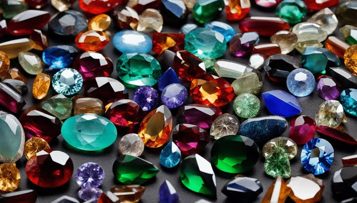
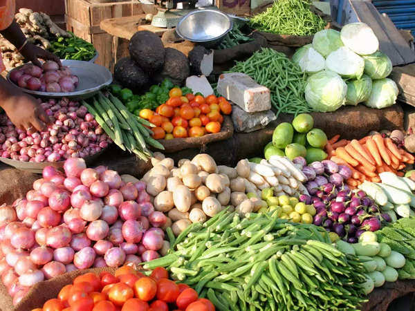
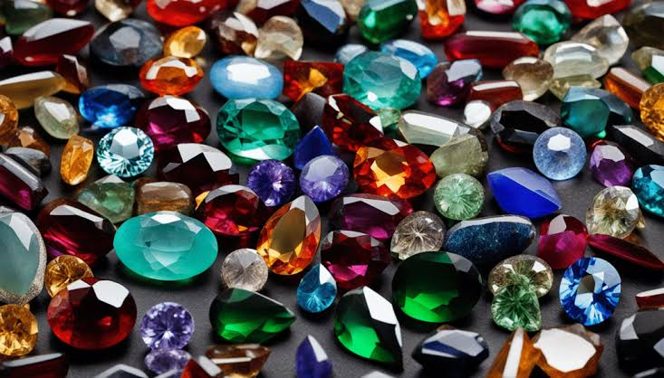
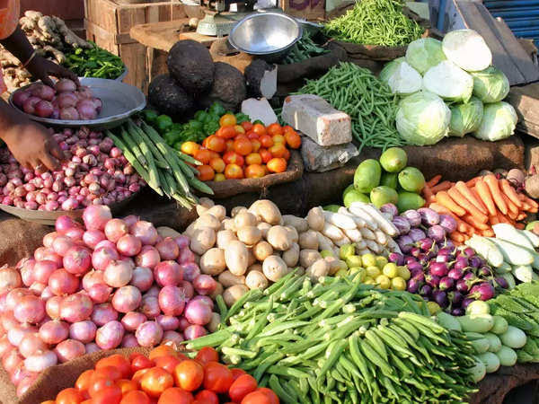
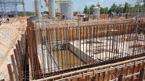
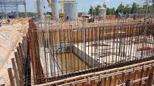

 



Blessed with rich natural resourses, a deep cultural history, and a pivotal geographical stance, Pakistan is uniquely positioned to elevate its economic stature by boosting its small and medium-sized enterprises (SME) Export sector. Boasting bounty of agriculture yields, premium textiles, extensive Gemstones market presence. By capitalizing on these strengths and adopting strategic initives, and international trade, setting the course for economic advancement.
Dry fruits hold a significant place in Pakistani culture, cuisine, and economy. From weddings to religious festivals, these nutrient-rich delicacies are an integral part of various celebrations and daily life. Let's delve into the importance of dry fruits in Pakistan.
Cultural Significance: Dry fruits have been a part of Pakistani culture for centuries. They are symbols of hospitality, generosity, and prosperity. Offering dry fruits to guests is considered a gesture of warmth and respect. Moreover, they are often exchanged as gifts during special occasions such as weddings, Eid celebrations, and religious festivals like Ramadan.
Nutritional Value: Dry fruits are not only delicious but also packed with essential nutrients. They are rich sources of vitamins, minerals, fiber, and antioxidants. In a country like Pakistan where malnutrition is a concern, dry fruits play a crucial role in providing necessary nutrients, especially to children and pregnant women.
Versatile Ingredients: Dry fruits are versatile ingredients used in a variety of Pakistani dishes. Whether it's desserts like halwa and kheer or savory dishes like biryani and pulao, dry fruits add flavor, texture, and nutritional value to the cuisine. They are also commonly used in traditional medicines and herbal remedies for their health benefits.
Economic Importance: Pakistan is a major producer and exporter of various types of dry fruits including almonds, pistachios, walnuts, and dates. The dry fruits industry contributes significantly to the country's economy by providing employment opportunities to thousands of people involved in cultivation, harvesting, processing, and trading of these products. Moreover, exports of dry fruits contribute to foreign exchange earnings for the country.
Challenges and Opportunities: Despite the cultural and economic importance of dry fruits in Pakistan, there are challenges facing the industry such as climate change, water scarcity, and outdated farming practices. However, there are also opportunities for innovation and growth through modernization of farming techniques, value addition, and diversification of products. In conclusion, dry fruits hold immense cultural, nutritional, and economic significance in Pakistan. They are not just snacks or ingredients; they are symbols of tradition, health, and prosperity. Preserving and promoting the cultivation and consumption of dry fruits is essential for the well-being of both the people and the economy of Pakistan.
Pakistan boasts a rich cultural heritage, intricately woven into the fabric of its society. One of the most vibrant expressions of this heritage is manifested through its diverse range of handicrafts. From exquisite embroidery to mesmerizing pottery, Pakistani handicrafts reflect the skill, creativity, and cultural depth of its artisans. In this essay, we will explore the significance of Pakistani handicrafts, their contribution to the economy, challenges they face, and strategies for their preservation and promotion.
Significance of Pakistani Handicrafts: Pakistani handicrafts are not merely objects of beauty; they are repositories of tradition, history, and identity. Each craft carries with it a story, often passed down through generations, encapsulating the ethos of different regions and communities. Whether it's the intricate patterns of Sindhi Ajrak or the delicate artistry of Multani pottery, these crafts serve as tangible markers of Pakistan's cultural diversity and heritage.
Contribution to the Economy: Beyond their cultural value, Pakistani handicrafts play a significant role in the country's economy. They provide livelihoods to millions of artisans, particularly in rural areas where traditional crafts are deeply rooted. The export of handicrafts also generates foreign exchange revenue, contributing to the overall economic development of the country. Additionally, the promotion of handicraft tourism has the potential to boost local economies and create employment opportunities in related sectors such as hospitality and transportation.
Challenges Faced by Pakistani Handicrafts: Despite their cultural and economic significance, Pakistani handicrafts face numerous challenges. These include:
Lack of Recognition: Many traditional crafts struggle to gain recognition in domestic and international markets due to competition from mass-produced alternatives and changing consumer preferences.
Limited Market Access: Accessing global markets can be challenging for small-scale artisans due to trade barriers, lack of infrastructure, and limited marketing resources.
Skills Erosion: The younger generation often shows less interest in learning traditional crafts, leading to a gradual erosion of skills and knowledge.
Exploitative Practices: Artisans are sometimes exploited by middlemen who offer low prices for their products, perpetuating cycles of poverty and inequality.
Preservation and Promotion Strategies: To address these challenges and ensure the continued vitality of Pakistani handicrafts, several strategies can be employed:
Skill Development Programs: Invest in training and capacity-building programs to preserve traditional craftsmanship and empower artisans with modern techniques and business skills.
Market Diversification: Explore niche markets and innovative marketing strategies to showcase the uniqueness of Pakistani handicrafts and attract discerning consumers.
Policy Support: Implement policies that provide incentives for the handicraft sector, including financial support, access to credit, and protection of intellectual property rights.
Community Empowerment: Foster collaborations between artisans, designers, and entrepreneurs to create value chains that benefit local communities and promote sustainable development.
Promotion of Cultural Tourism: Leverage Pakistan's rich cultural heritage to promote handicraft tourism, offering immersive experiences that highlight the craftsmanship and traditions of different regions.
In conclusion, Pakistani handicrafts are not only treasures of artistic expression but also vital engines of economic and cultural development. By addressing the challenges they face and implementing effective preservation and promotion strategies, Pakistan can ensure that its rich legacy of craftsmanship continues to flourish for generations to come.Dairy and poultry farming play pivotal roles in Pakistan's agricultural landscape, contributing significantly to both the economy and food security. These sectors not only provide essential nutrition but also offer livelihood opportunities to millions of people across the country.
Dairy Farming: Dairy farming in Pakistan is a cornerstone of the agricultural sector, with millions of small and large-scale dairy farms spread throughout the country. Milk is a vital source of nutrition, especially for children, and the dairy industry plays a crucial role in meeting the nation's demand for dairy products. Smallholder farmers form the backbone of Pakistan's dairy industry, with traditional methods still prevalent in many areas. However, there is also a growing trend towards modernizing dairy farming practices, including improved breeds, better feeding techniques, and enhanced veterinary care. This modernization not only increases productivity but also improves the quality of dairy products.
Poultry Farming: Poultry farming is another essential component of Pakistan's agriculture sector. It provides high-quality protein in the form of eggs and meat, making it an affordable and accessible source of nutrition for a large portion of the population.
Similar to dairy farming, poultry farming in Pakistan encompasses both small-scale backyard operations and large commercial enterprises. Advances in breeding, nutrition, and disease management have led to significant improvements in poultry productivity and efficiency.
Challenges and Opportunities: Despite their significance, dairy and poultry farming in Pakistan face various challenges, including limited access to quality inputs, inadequate infrastructure, and prevalent diseases. Additionally, climate change poses new threats to these sectors, affecting feed availability and animal health.
However, there are also numerous opportunities for growth and development. Investments in research and technology can lead to further improvements in productivity and sustainability. Moreover, initiatives aimed at enhancing market access and value chain integration can benefit both farmers and consumers.
Conclusion: In conclusion, dairy and poultry farming are integral to Pakistan's agricultural sector, providing essential nutrition, employment opportunities, and economic growth. By addressing challenges and capitalizing on opportunities, Pakistan can further strengthen these sectors and ensure food security for its growing population.
Economic Contribution: Pakistan's agricultural sector, including fruits and vegetables, plays a vital role in the country's economy. It provides employment to millions of people, especially in rural areas, and contributes a substantial share to the GDP through exports.
Nutritional Value: Pakistani fruits and vegetables are packed with essential nutrients, vitamins, and minerals vital for maintaining good health. From the Vitamin C-rich citrus fruits to the potassium-loaded bananas, these natural treasures promote overall well-being and help prevent various diseases.
Culinary Delights: Fruits and vegetables form the backbone of Pakistani cuisine, enriching dishes with their unique flavors, textures, and colors. From savory curries to refreshing salads and decadent desserts, these ingredients enhance the gastronomic experience and are an integral part of every meal.
Export Potential: Pakistan's fruits and vegetables have a high export potential, with markets across the globe demanding their freshness and quality. Exporting these agricultural products not only earns foreign exchange but also elevates the country's image as a reliable supplier of premium produce.
Cultural Heritage: Fruits and vegetables are deeply ingrained in Pakistani culture, featuring prominently in festivals, celebrations, and everyday life. They symbolize abundance, hospitality, and prosperity, reflecting the rich agricultural heritage and traditions passed down through generations.
Health Benefits: Consumption of fresh fruits and vegetables is linked to numerous health benefits, including lower risk of chronic diseases such as heart disease, diabetes, and certain cancers. Incorporating these natural treasures into the diet promotes longevity and vitality. In conclusion, Pakistani fruits and vegetables are not just agricultural commodities but essential components of the nation's identity, economy, and well-being. Preserving their diversity, quality, and accessibility is crucial for sustaining livelihoods, promoting health, and enriching the cultural tapestry of Pakistan.
Firstly, Pakistan's coastal areas are home to a variety of marine species, including fish, shrimp, crab, and lobster, which serve as the primary source of livelihood for coastal communities. Fishermen rely on traditional fishing methods as well as modern techniques to harvest these resources. The government has implemented measures to promote sustainable fishing practices, such as licensing and monitoring, to prevent overexploitation and preserve marine Secondly, inland fisheries in Pakistan, comprising rivers, lakes, and reservoirs, further enhance the country's fish production. The Indus River and its tributaries support a diverse range of freshwater species, while man-made reservoirs like Tarbela and Mangla provide additional opportunities for aquaculture and fishing activities. Investments in aquaculture projects and fish farming have helped boost inland fish production, providing employment and income opportunities in rural areas. Moreover, the fisheries sector contributes significantly to Pakistan's economy through exports of seafood products. Fish and shrimp are among the top export commodities, earning valuable foreign exchange for the country. The government has focused on improving processing and storage facilities to meet international quality standards, thereby enhancing competitiveness in the global market. Despite these strengths, Pakistani fisheries face challenges such as overfishing, pollution, and inadequate infrastructure. Addressing these challenges requires concerted efforts from government agencies, fishing communities, and other stakeholders. Measures such as promoting sustainable fishing practices, strengthening enforcement of regulations, and investing in infrastructure development can help overcome these obstacles and unleash the full potential of Pakistan's fisheries sector. In conclusion, Pakistani fisheries constitute a vital sector with immense economic, social, and environmental significance. By harnessing its marine and inland resources sustainably and addressing existing challenges, Pakistan can ensure the continued growth and prosperity of its fisheries industry, benefiting both the economy and the livelihoods of its people.